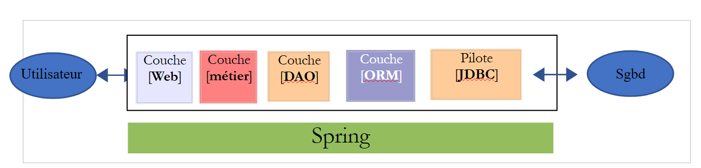
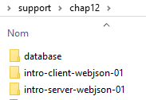
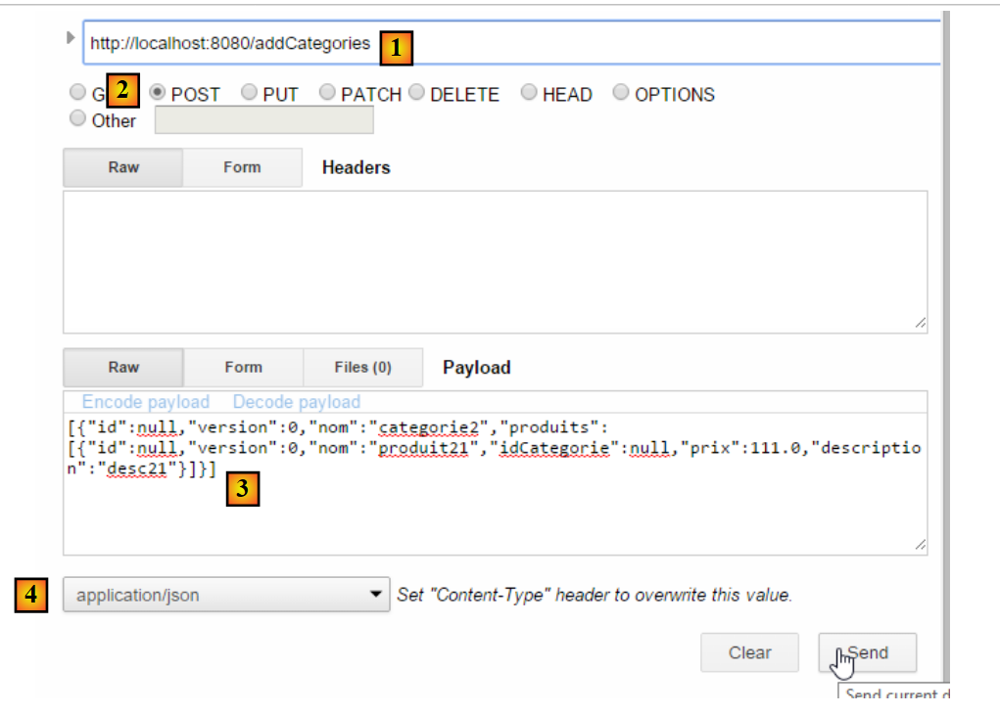
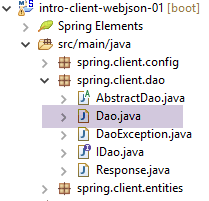

13. [الدورة التدريبية]: عرض قاعدة بيانات على الويب باستخدام Spring MVC
الكلمات المفتاحية: بنية متعددة المستويات، Spring، حقن التبعية، خدمة الويب / JSON، العميل / الخادم
13.1. الدعم
 |  |
يمكن العثور على مشاريع هذا الفصل في المجلد [support / chap-13]. يقوم البرنامج النصي SQL [dbintrospringdata.sql] بإنشاء قاعدة بيانات MySQL المطلوبة للاختبار.
13.2. دور Spring MVC في تطبيق الويب
دعونا نضع Spring MVC في سياق تطوير تطبيق ويب. في أغلب الأحيان، سيتم بناؤه على بنية متعددة الطبقات مثل ما يلي:
 |
- الطبقة [Web] هي الطبقة التي تتعامل مع مستخدم تطبيق الويب. يتفاعل المستخدم مع تطبيق الويب من خلال صفحات الويب التي يتم عرضها في المتصفح. يقع Spring MVC في هذه الطبقة وفقط في هذه الطبقة؛
- تنفذ طبقة [الأعمال] منطق الأعمال الخاص بالتطبيق، مثل حساب الراتب أو الفاتورة. تستخدم هذه الطبقة البيانات الواردة من المستخدم عبر طبقة [الويب] ومن نظام إدارة قواعد البيانات (DBMS) عبر طبقة [DAO]؛
- تدير طبقة [DAO] (كائنات الوصول إلى البيانات) وطبقة [ORM] (مُخطِط العلاقات بين الكائنات) ومحرك JDBC الوصول إلى البيانات في نظام إدارة قواعد البيانات. تعمل طبقة [ORM] كجسر بين الكائنات التي تتعامل معها طبقة [DAO] والصفوف والأعمدة في الجداول في قاعدة البيانات العلائقية. تسمح مواصفات JPA (Java Persistence API) بالتجريد من ORM المستخدم، شريطة أن تنفذ هذه المواصفات. سيكون هذا هو الحال هنا، وسنشير من الآن فصاعدًا إلى طبقة ORM باسم طبقة JPA؛
- يتم التعامل مع تكامل الطبقات بواسطة إطار عمل Spring؛
13.3. نموذج تطوير Spring MVC
تنفذ Spring MVC نمط الهندسة المعمارية MVC (Model–View–Controller) على النحو التالي:
 |
تتم معالجة طلب العميل على النحو التالي:
- الطلب - تأتي عناوين URL المطلوبة بالصيغة http://machine:port/contexte/Action/param1/param2/....?p1=v1&p2=v2&... ويستخدم [المحرك الأمامي] ملف تكوين أو تعليقات Java لتوجيه الطلب إلى وحدة التحكم الصحيحة والإجراء الصحيح داخل تلك الوحدة. وللقيام بذلك، يستخدم حقل [Action] في عنوان URL. يتكون باقي عنوان URL [/param1/param2/...] من معلمات اختيارية سيتم تمريرها إلى الإجراء. يشير الحرف C في MVC هنا إلى السلسلة [Front Controller، Controller، Action]. إذا لم تتمكن أي وحدة تحكم من معالجة الإجراء المطلوب، فسيرد خادم الويب بأن عنوان URL المطلوب لم يتم العثور عليه.
- المعالجة
- يمكن للإجراء المحدد استخدام المعلمات التي مررها إليه [Front Controller]. ويمكن أن تأتي هذه المعلمات من عدة مصادر:
- مسار [/param1/param2/...] لعنوان URL،
- معلمات [p1=v1&p2=v2] لعنوان URL،
- من المعلمات التي أرسلها المتصفح مع طلبه؛
- عند معالجة طلب المستخدم، قد يحتاج الإجراء إلى طبقة [business] [2b]. بمجرد معالجة طلب العميل، قد يؤدي ذلك إلى استجابات متنوعة. ومن الأمثلة الكلاسيكية على ذلك:
- صفحة خطأ إذا تعذر معالجة الطلب بشكل صحيح
- صفحة تأكيد في الحالات الأخرى
- يأمر الإجراء بعرض طريقة عرض محددة [3]. ستعرض طريقة العرض هذه البيانات المعروفة باسم نموذج العرض. هذا هو M في MVC. سيقوم الإجراء بإنشاء نموذج M هذا [2c] ويأمر بعرض طريقة عرض V [3]؛
- الاستجابة - تستخدم طريقة العرض V المحددة النموذج M الذي أنشأته الإجراء لتهيئة الأجزاء الديناميكية من استجابة HTML التي يجب إرسالها إلى العميل، ثم ترسل هذه الاستجابة.
بالنسبة لخدمة الويب / JSON، يتم تعديل البنية السابقة بشكل طفيف:
 |
- في [4a]، يتم تحويل النموذج، وهو فئة Java، إلى سلسلة JSON بواسطة مكتبة JSON؛
- في [4b]، يتم إرسال سلسلة JSON هذه إلى المتصفح؛
الآن، دعونا نوضح العلاقة بين بنية الويب MVC والبنية الطبقية. اعتمادًا على كيفية تعريف النموذج، قد يكون هذان المفهومان مرتبطين أو غير مرتبطين. لنفكر في تطبيق ويب Spring MVC أحادي الطبقة:
 |
إذا قمنا بتنفيذ الطبقة [Web] باستخدام Spring MVC، فسنحصل بالفعل على بنية ويب MVC ولكن ليس بنية متعددة الطبقات. هنا، ستتولى الطبقة [Web] كل شيء: العرض، والمنطق التجاري، والوصول إلى البيانات. والأعمال هي التي ستقوم بتنفيذ هذا العمل.
الآن، دعونا ننظر في بنية ويب متعددة الطبقات:
 |
يمكن تنفيذ طبقة [الويب] بدون إطار عمل وبدون اتباع نمط MVC. في هذه الحالة، لا تزال لدينا بنية متعددة الطبقات، لكن طبقة الويب لا تنفذ نمط MVC.
على سبيل المثال، في عالم .NET، يمكن تنفيذ طبقة [الويب] الموصوفة أعلاه باستخدام ASP.NET MVC، مما ينتج عنه بنية متعددة الطبقات مع طبقة [ويب] بنمط MVC. ومع ذلك، يمكن استبدال طبقة ASP.NET MVC هذه بطبقة ASP.NET كلاسيكية (WebForms) مع الحفاظ على بقية العناصر (منطق الأعمال، DAO، ORM) دون تغيير. وبذلك نحصل على بنية متعددة الطبقات مع طبقة [Web] لم تعد قائمة على MVC.
في MVC، قلنا أن نموذج M هو نموذج عرض V، أي مجموعة البيانات التي يعرضها عرض V. وهناك تعريف آخر لنموذج M في MVC:
 |
يعتبر العديد من المؤلفين أن ما يقع على يمين طبقة [الويب] يشكل نموذج M في MVC. لتجنب الغموض، يمكننا الإشارة إلى:
- نموذج المجال عند الإشارة إلى كل ما يقع على يمين طبقة [الويب]
- نموذج العرض عند الإشارة إلى البيانات التي تعرضها طريقة العرض V
فيما يلي، سيشير مصطلح "نموذج M" حصريًا إلى نموذج عرض V.
13.4. مشروع Web/JSON باستخدام Spring MVC
يقدم الموقع [http://spring.io/guides] دروسًا تعليمية للمبتدئين لاستكشاف نظام Spring. سنتبع إحدى هذه الدروس لاكتشاف تكوين Maven المطلوب لمشروع Spring MVC.
13.4.1. مشروع العرض التوضيحي
 |
- في [1]، نقوم باستيراد أحد أدلة Spring؛
 |
- في [2]، نختار مثال [Rest Service]؛
- في [3]، نختار مشروع Maven؛
- في [4]، نختار الإصدار النهائي من الدليل؛
- في [5]، نؤكد؛
- في [6]، المشروع المستورد؛
غالبًا ما تُسمى خدمات الويب التي يمكن الوصول إليها عبر عناوين URL قياسية والتي تُرجع بيانات JSON بخدمات REST (REpresentational State Transfer). ويُقال إن الخدمة تتبع نمط RESTful إذا كانت تتبع قواعد معينة.
دعونا الآن نفحص المشروع المستورد، بدءًا من تكوين Maven الخاص به.
13.4.2. تكوين Maven
<?xml version="1.0" encoding="UTF-8"?>
<project xmlns="http://maven.apache.org/POM/4.0.0" xmlns:xsi="http://www.w3.org/2001/XMLSchema-instance"
xsi:schemaLocation="http://maven.apache.org/POM/4.0.0 http://maven.apache.org/xsd/maven-4.0.0.xsd">
<modelVersion>4.0.0</modelVersion>
<groupId>org.springframework</groupId>
<artifactId>gs-rest-service</artifactId>
<version>0.1.0</version>
<parent>
<groupId>org.springframework.boot</groupId>
<artifactId>spring-boot-starter-parent</artifactId>
<version>1.2.2.RELEASE</version>
</parent>
<dependencies>
<dependency>
<groupId>org.springframework.boot</groupId>
<artifactId>spring-boot-starter-web</artifactId>
</dependency>
</dependencies>
<properties>
<start-class>hello.Application</start-class>
</properties>
<build>
<plugins>
<plugin>
<groupId>org.springframework.boot</groupId>
<artifactId>spring-boot-maven-plugin</artifactId>
</plugin>
</plugins>
</build>
<repositories>
<repository>
<id>spring-releases</id>
<url>https://repo.spring.io/libs-release</url>
</repository>
</repositories>
<pluginRepositories>
<pluginRepository>
<id>spring-releases</id>
<url>https://repo.spring.io/libs-release</url>
</pluginRepository>
</pluginRepositories>
</project>
- الأسطر 6–8: خصائص مشروع Maven. هناك علامة [<packaging>] تحدد نوع الملف الذي ينتجه بناء Maven مفقودة. في حالة عدم وجودها، يتم استخدام النوع [jar]. وبالتالي، فإن التطبيق هو تطبيق قابل للتنفيذ قائم على وحدة التحكم، وليس تطبيق ويب، وفي هذه الحالة سيكون التعبئة [war]؛
- الأسطر 10-14: يحتوي مشروع Maven على مشروع أب [spring-boot-starter-parent]. يحدد هذا معظم تبعيات المشروع. قد تكون كافية، وفي هذه الحالة لا تضاف أي تبعيات إضافية، أو قد لا تكون كافية، وفي هذه الحالة تضاف التبعيات المفقودة؛
- الأسطر 17-20: تتضمن الأداة [spring-boot-starter-web] المكتبات اللازمة لمشروع خدمة ويب Spring MVC حيث لا يتم إنشاء أي عروض. تتضمن هذه الأداة عددًا كبيرًا جدًا من المكتبات، بما في ذلك تلك الخاصة بخادم Tomcat المدمج. سيتم تشغيل التطبيق على هذا الخادم؛
المكتبات المضمنة في هذا التكوين كثيرة جدًا:
 |  |
أعلاه، نرى الأرشيفات الثلاثة لخادم Tomcat.
13.4.3. بنية خدمة Spring [الويب / JSON]
بالنسبة لخدمة الويب/JSON، يقوم Spring MVC بتنفيذ نموذج MVC على النحو التالي:
 |
- في [4a]، يتم تحويل النموذج — وهو فئة Java — إلى سلسلة JSON بواسطة مكتبة JSON؛
- في [4b]، يتم إرسال سلسلة JSON هذه إلى المتصفح؛
13.4.4. وحدة التحكم C
 |
يحتوي التطبيق المستورد على وحدة التحكم التالية:
package hello;
import java.util.concurrent.atomic.AtomicLong;
import org.springframework.web.bind.annotation.RequestMapping;
import org.springframework.web.bind.annotation.RequestParam;
import org.springframework.web.bind.annotation.RestController;
@RestController
public class GreetingController {
private static final String template = "Hello, %s!";
private final AtomicLong counter = new AtomicLong();
@RequestMapping("/greeting")
public Greeting greeting(@RequestParam(value = "name", defaultValue = "World") String name) {
return new Greeting(counter.incrementAndGet(), String.format(template, name));
}
}
- السطر 9: تجعل العلامة التوضيحية [@RestController] فئة [GreetingController] وحدة تحكم Spring، مما يعني أن طرقها مسجلة لمعالجة عناوين URL. لقد رأينا العلامة التوضيحية المماثلة [@Controller]. كان نوع الإرجاع لطرق تلك الوحدة هو [String]، وهو اسم العرض المراد عرضه. هنا، الأمر مختلف. تُرجع أساليب [@RestController] كائنات يتم تسلسلها لإرسالها إلى المتصفح. يعتمد نوع التسلسل الذي يتم إجراؤه على تكوين Spring MVC. هنا، سيتم تسلسلها إلى JSON. إن وجود مكتبة JSON في تبعيات المشروع هو ما يجعل Spring Boot يقوم تلقائيًا بتكوين المشروع بهذه الطريقة؛
- السطر 14: تحدد العلامة [@RequestMapping] عنوان URL الذي تعالجه الطريقة، وهو في هذه الحالة عنوان URL [/greeting]؛
- السطر 15: سبق أن شرحنا التعليق التوضيحي [@RequestParam]. والنتيجة التي ترجعها الطريقة هي كائن من النوع [Greeting].
- السطر 12: عدد صحيح طويل من النوع الذري. وهذا يعني أنه يدعم الوصول المتزامن. قد ترغب خيوط متعددة في زيادة متغير [counter] في نفس الوقت. وسيتم التعامل مع هذا بشكل صحيح. لا يمكن للخيط قراءة قيمة العداد إلا بعد أن ينتهي الخيط الذي يقوم بتعديله حاليًا من تعديله.
13.4.5. نموذج M
نموذج M الناتج عن الطريقة السابقة هو كائن [Greeting] التالي:
 |
package hello;
public class Greeting {
private final long id;
private final String content;
public Greeting(long id, String content) {
this.id = id;
this.content = content;
}
public long getId() {
return id;
}
public String getContent() {
return content;
}
}
سيؤدي تحويل JSON لهذا الكائن إلى إنشاء السلسلة {"id":n,"content":"text"}. وفي النهاية، ستكون سلسلة JSON الناتجة عن طريقة وحدة التحكم بالشكل التالي:
أو
13.4.6. التنفيذ
 |
تعد فئة [Application.java] هي الفئة القابلة للتنفيذ في المشروع. وفيما يلي شفرة البرمجة الخاصة بها:
package hello;
import org.springframework.boot.autoconfigure.EnableAutoConfiguration;
import org.springframework.boot.SpringApplication;
import org.springframework.context.annotation.ComponentScan;
@ComponentScan
@EnableAutoConfiguration
public class Application {
public static void main(String[] args) {
SpringApplication.run(Application.class, args);
}
}
لقد سبق أن تناولنا هذا الرمز وشرحناه في المثال السابق.
13.4.7. تشغيل المشروع
 |
نحصل على سجلات وحدة التحكم التالية:
- السطر 13: يبدأ خادم Tomcat على المنفذ 8080 (السطر 12)؛
- السطر 17: وجود سيرفلت [DispatcherServlet]؛
- السطر 20: تم اكتشاف الطريقة [GreetingController.greeting]؛
لاختبار تطبيق الويب، نطلب عنوان URL [http://localhost:8080/greeting]:
 |  |
نتلقى سلسلة JSON المتوقعة. قد يكون من المثير للاهتمام الاطلاع على رؤوس HTTP التي أرسلها الخادم. للقيام بذلك، سنستخدم ملحق Chrome المسمى [Advanced Rest Client] (Chrome / Ctrl-T / قائمة [التطبيقات] / [Advanced Rest Client] - انظر الملاحق، الفقرة 22.5):
 |
- في [1]، عنوان URL المطلوب؛
- في [2]، يتم استخدام طريقة GET؛
- في [3]، استجابة JSON؛
- في [4]، أشار الخادم إلى أنه يرسل استجابة بتنسيق JSON؛
- في [5]، نطلب نفس عنوان URL ولكن هذه المرة باستخدام طلب POST؛
- في [7]، يتم إرسال المعلومات إلى الخادم بتنسيق [urlencoded]؛
- في [6]، المعلمة "name" وقيمتها؛
- في [8]، يُخبر المتصفح الخادم بأنه يرسل له معلومات [urlencoded]؛
- في [9]، استجابة JSON من الخادم؛
13.4.8. إنشاء أرشيف قابل للتنفيذ
سنقوم الآن بإنشاء أرشيف قابل للتنفيذ:
 |
 |
- في [1]: نقوم بتشغيل هدف Maven؛
- في [2]: هناك هدفان: [clean] لحذف مجلد [target] من مشروع Maven، و[package] لإعادة إنشائه؛
- في [3]: سيكون المجلد [target] الذي تم إنشاؤه موجودًا في هذا المجلد؛
- في [4]: نقوم بإنشاء الهدف؛
في السجلات التي تظهر في وحدة التحكم، من المهم رؤية المكون الإضافي [spring-boot-maven-plugin]. هذا هو المكون الإضافي الذي يقوم بإنشاء الأرشيف القابل للتنفيذ.
باستخدام وحدة التحكم، انتقل إلى المجلد الذي تم إنشاؤه:
D:\Temp\wksSTS\gs-rest-service\target>dir
...
11/06/2014 15:30 <DIR> classes
11/06/2014 15:30 <DIR> generated-sources
11/06/2014 15:30 11 073 572 gs-rest-service-0.1.0.jar
11/06/2014 15:30 3 690 gs-rest-service-0.1.0.jar.original
11/06/2014 15:30 <DIR> maven-archiver
11/06/2014 15:30 <DIR> maven-status
...
- السطر 5: الأرشيف الذي تم إنشاؤه؛
يتم تنفيذ هذا الأرشيف على النحو التالي:
D:\Temp\wksSTS\gs-rest-service-complete\target>java -jar gs-rest-service-0.1.0.jar
. ____ _ __ _ _
/\\ / ___'_ __ _ _(_)_ __ __ _ \ \ \ \
( ( )\___ | '_ | '_| | '_ \/ _` | \ \ \ \
\\/ ___)| |_)| | | | | || (_| | ) ) ) )
' |____| .__|_| |_|_| |_\__, | / / / /
=========|_|==============|___/=/_/_/_/
:: Spring Boot :: (v1.1.0.RELEASE)
2014-06-11 15:32:47.088 INFO 4972 --- [ main] hello.Application
: Starting Application on Gportpers3 with PID 4972 (D:\Temp\wk
sSTS\gs-rest-service-complete\target\gs-rest-service-0.1.0.jar started by ST in
D:\Temp\wksSTS\gs-rest-service-complete\target)
...
الآن بعد أن أصبح تطبيق الويب قيد التشغيل، يمكنك الوصول إليه باستخدام متصفح:
 |
13.4.9. نشر التطبيق على خادم Tomcat
كما فعلنا في المشروع السابق، نقوم بتعديل ملف [pom.xml] على النحو التالي:
<?xml version="1.0" encoding="UTF-8"?>
<project xmlns="http://maven.apache.org/POM/4.0.0" xmlns:xsi="http://www.w3.org/2001/XMLSchema-instance"
xsi:schemaLocation="http://maven.apache.org/POM/4.0.0 http://maven.apache.org/xsd/maven-4.0.0.xsd">
<modelVersion>4.0.0</modelVersion>
<groupId>org.springframework</groupId>
<artifactId>gs-rest-service</artifactId>
<version>0.1.0</version>
<packaging>war</packaging>
...
</project>
- السطر 9: يجب تحديد أنك ستقوم بإنشاء ملف WAR (أرشيف ويب)؛
يجب عليك أيضًا تكوين تطبيق الويب. في حالة عدم وجود ملف [web.xml]، يتم ذلك باستخدام فئة تمتد من [SpringBootServletInitializer]:
 |
فيما يلي فئة [ApplicationInitializer]:
package hello;
import org.springframework.boot.builder.SpringApplicationBuilder;
import org.springframework.boot.context.web.SpringBootServletInitializer;
public class ApplicationInitializer extends SpringBootServletInitializer {
@Override
protected SpringApplicationBuilder configure(SpringApplicationBuilder application) {
return application.sources(Application.class);
}
}
- السطر 6: فئة [ApplicationInitializer] تمتد من فئة [SpringBootServletInitializer]؛
- السطر 9: يتم تجاوز طريقة [configure] (السطر 8)؛
- السطر 10: يتم توفير الفئة التي تقوم بتكوين المشروع؛
لتشغيل المشروع، اتبع الخطوات التالية:
 |
- في [1-2]، قم بتشغيل المشروع على أحد الخوادم المسجلة في بيئة تطوير Eclipse؛
بمجرد الانتهاء من ذلك، يمكنك طلب عنوان URL [http://localhost:8080/gs-rest-service/greeting/?name=Mitchell] في متصفح:
 |
13.4.10. الخلاصة
لقد قدمنا نوعًا من مشاريع Spring MVC حيث يرسل التطبيق الويب دفق JSON إلى المتصفح. سنقوم الآن بتطوير تطبيق ويب/JSON لعرض قاعدة البيانات [dbintrospringdata] التي تمت دراستها في البرنامج التعليمي [مقدمة إلى Spring Data] على الويب.
13.5. عرض قاعدة بيانات [dbintrospringdata] على الويب
13.5.1. بنية خدمة الويب/JSON
سنقوم بتنفيذ البنية التالية:
 |
يتم تنفيذ طبقات [DAO] و[JPA] بواسطة التطبيق المكتوب في البرنامج التعليمي [مقدمة إلى Spring Data].
13.5.2. تثبيت قاعدة البيانات
 |
يقوم البرنامج النصي SQL [dbintrospringdata.sql] بإنشاء قاعدة بيانات MySQL المطلوبة للاختبار.
13.5.3. مشروع Eclipse لخدمة الويب / JSON
مشروع Eclipse لخدمة الويب / JSON هو كما يلي:
 |
هذا مشروع Maven يحتوي على ملف [pom.xml] كما يلي:
<project xmlns="http://maven.apache.org/POM/4.0.0" xmlns:xsi="http://www.w3.org/2001/XMLSchema-instance"
xsi:schemaLocation="http://maven.apache.org/POM/4.0.0 http://maven.apache.org/xsd/maven-4.0.0.xsd">
<modelVersion>4.0.0</modelVersion>
<groupId>istia.st.webjson</groupId>
<artifactId>intro-server-webjson01</artifactId>
<version>0.0.1-SNAPSHOT</version>
<name>intro-server-webjson01</name>
<description>démo spring mvc</description>
<parent>
<groupId>org.springframework.boot</groupId>
<artifactId>spring-boot-starter-parent</artifactId>
<version>1.2.7.RELEASE</version>
</parent>
<dependencies>
<dependency>
<groupId>istia.st.springdata</groupId>
<artifactId>intro-spring-data-01</artifactId>
<version>0.0.1-SNAPSHOT</version>
</dependency>
<dependency>
<groupId>org.springframework.boot</groupId>
<artifactId>spring-boot-starter-web</artifactId>
</dependency>
<dependency>
<groupId>org.springframework.boot</groupId>
<artifactId>spring-boot-starter</artifactId>
</dependency>
</dependencies>
<build>
<plugins>
<plugin>
<groupId>org.springframework.boot</groupId>
<artifactId>spring-boot-maven-plugin</artifactId>
</plugin>
<plugin>
<groupId>org.apache.maven.plugins</groupId>
<artifactId>maven-surefire-plugin</artifactId>
<version>2.18.1</version>
</plugin>
</plugins>
</build>
</project>
- الأسطر 11–15: مشروع Maven الأصلي المستخدم بالفعل لطبقة [DAO]؛
- الأسطر 18–22: التبعية لطبقة [DAO]؛
- الأسطر 23–26: التبعية على عنصر [spring-boot-starter-web]. يتضمن هذا العنصر جميع التبعيات اللازمة لإنشاء خدمة ويب/JSON. كما يتضمن مكتبات غير ضرورية. لذا، سيكون من الضروري إجراء تكوين أكثر دقة. ومع ذلك، فإن هذا التكوين مفيد للبدء؛
- الأسطر 28–30: التبعية على عنصر [spring-boot-starter] تسمح لك بإدارة تعليقات Spring Boot؛
التبعيات التي يقدمها هذا التكوين هي كما يلي:
 |
- في [1]، يمكننا أن نرى أن Eclipse قد اكتشف التبعية لأرشيف المشروع [intro-spring-data-01]؛
التبعيات المذكورة أعلاه هي تبعيات كل من طبقة [DAO] وطبقة [web].
13.5.3.1. تكوين طبقة [web]
يتم تكوين طبقة [web] بواسطة ملف [AppConfig]:
 |
تقوم فئة [WebConfig] بتكوين طبقة [web]:
package spring.webjson.config;
import org.springframework.beans.factory.annotation.Autowired;
import org.springframework.boot.context.embedded.EmbeddedServletContainerFactory;
import org.springframework.boot.context.embedded.ServletRegistrationBean;
import org.springframework.boot.context.embedded.tomcat.TomcatEmbeddedServletContainerFactory;
import org.springframework.context.ApplicationContext;
import org.springframework.context.annotation.Bean;
import org.springframework.web.context.WebApplicationContext;
import org.springframework.web.servlet.DispatcherServlet;
import org.springframework.web.servlet.config.annotation.EnableWebMvc;
import org.springframework.web.servlet.config.annotation.WebMvcConfigurerAdapter;
import com.fasterxml.jackson.databind.ObjectMapper;
import com.fasterxml.jackson.databind.ser.impl.SimpleBeanPropertyFilter;
import com.fasterxml.jackson.databind.ser.impl.SimpleFilterProvider;
@EnableWebMvc
public class WebConfig extends WebMvcConfigurerAdapter {
// -------------------------------- layer configuration [web]
@Autowired
private ApplicationContext context;
@Bean
public DispatcherServlet dispatcherServlet() {
DispatcherServlet servlet = new DispatcherServlet((WebApplicationContext) context);
return servlet;
}
@Bean
public ServletRegistrationBean servletRegistrationBean(DispatcherServlet dispatcherServlet) {
return new ServletRegistrationBean(dispatcherServlet, "/*");
}
@Bean
public EmbeddedServletContainerFactory embeddedServletContainerFactory() {
return new TomcatEmbeddedServletContainerFactory("", 8080);
}
// filters jSON
@Bean(name = "jsonMapper")
public ObjectMapper jsonMapper() {
return new ObjectMapper();
}
@Bean(name = "jsonMapperCategorieWithProduits")
public ObjectMapper jsonMapperCategorieWithProduits() {
// mapper jSON
ObjectMapper mapper = new ObjectMapper();
// filters
mapper.setFilters(
new SimpleFilterProvider().addFilter("jsonFilterCategorie", SimpleBeanPropertyFilter.serializeAllExcept())
.addFilter("jsonFilterProduit", SimpleBeanPropertyFilter.serializeAllExcept("categorie")));
// result
return mapper;
}
@Bean(name = "jsonMapperProduitWithCategorie")
public ObjectMapper jsonMapperProduitWithCategorie() {
// mapper jSON
ObjectMapper mapper = new ObjectMapper();
// filters
mapper.setFilters(
new SimpleFilterProvider().addFilter("jsonFilterProduit", SimpleBeanPropertyFilter.serializeAllExcept())
.addFilter("jsonFilterCategorie", SimpleBeanPropertyFilter.serializeAllExcept("produits")));
// result
return mapper;
}
@Bean(name = "jsonMapperCategorieWithoutProduits")
public ObjectMapper jsonMapperCategorieWithoutProduits() {
// mapper jSON
ObjectMapper mapper = new ObjectMapper();
// filters
mapper.setFilters(new SimpleFilterProvider().addFilter("jsonFilterCategorie",
SimpleBeanPropertyFilter.serializeAllExcept("produits")));
// result
return mapper;
}
@Bean(name = "jsonMapperProduitWithoutCategorie")
public ObjectMapper jsonMapperProduitWithoutCategorie() {
// mapper jSON
ObjectMapper mapper = new ObjectMapper();
// filters
mapper.setFilters(new SimpleFilterProvider().addFilter("jsonFilterProduit",
SimpleBeanPropertyFilter.serializeAllExcept("categorie")));
// result
return mapper;
}
}
- السطر 18: تعمل العلامة [@EnableWebMvc] على تشغيل التكوينات التلقائية لإطار عمل Spring MVC؛
- السطر 19: تمتد فئة [WebConfig] من فئة [WebMvcConfigurerAdapter] في Spring لإعادة تعريف بعض المكونات (السطور 26–40)؛
- السطور 22–23: حقن سياق Spring؛
- الأسطر 25-29: تعريف سيرفلت إطار عمل Spring MVC، الذي يوجه طلبات HTTP إلى وحدة التحكم والطريقة الصحيحة. [DispatcherServlet] هي فئة Spring؛
- الأسطر 31-34: نحدد أن هذا السيرفلت يتعامل مع جميع عناوين URL؛
- الأسطر 36-39: سيؤدي وجود هذا البين إلى تنشيط خادم Tomcat المضمن في أرشيفات المشروع. وسيقوم بالاستماع إلى الطلبات على المنفذ 8080؛
- الأسطر 42–91: حبات سيتم استخدامها لإدارة مرشحات JSON؛
- الأسطر 42–45: مخطط JSON بدون مرشحات؛
- الأسطر 47–57: مخطط JSON الذي يسمح لك باسترداد فئة مع منتجاتها. لاحظ أنه عند طلب فئة مع منتجاتها، يجب عليك تكوين كل من مرشح JSON لفئة [Category] ومرشح فئة [Product]. هذا هو الحال دائمًا. عند تسلسل/إلغاء تسلسل فئة إلى JSON، يجب عليك تكوين مرشح JSON للفئة ومرشحات جميع التبعيات المراد تضمينها فيها؛
- الأسطر 59–69: مخطط JSON الذي يسمح بعرض منتج مع فئته؛
- الأسطر 71–80: مخطط JSON الذي يسمح لك بالحصول على فئة بدون منتجاتها؛
- الأسطر 82–91: مخطط JSON الذي يسمح لك باسترداد منتج بدون فئته؛
تقوم فئة [AppConfig] بتكوين التطبيق بأكمله، أي طبقات [web] و[DAO]:
package spring.webjson.config;
import org.springframework.context.annotation.ComponentScan;
import org.springframework.context.annotation.Import;
import spring.data.config.DaoConfig;
@ComponentScan(basePackages = { "spring.webjson" })
@Import({ DaoConfig.class, WebConfig.class})
public class AppConfig {
}
- السطر 9: يستورد المكونات من طبقة [DAO] وتلك من طبقة [web]؛
- السطر 8: يحدد الحزم التي يمكن العثور فيها على حبات Spring الأخرى؛
لاحظ أننا لم نستخدم تعليق [@EnableAutoConfiguration] في أي مكان. لقد فضلنا التحكم في التكوين بأنفسنا.
13.5.4. نموذج التطبيق
 |
تبدو فئة [ApplicationModel] كما يلي:
package spring.webjson.models;
import java.util.List;
import org.springframework.beans.factory.annotation.Autowired;
import org.springframework.stereotype.Component;
import spring.data.dao.IDao;
import spring.data.entities.Categorie;
import spring.data.entities.Produit;
@Component
public class ApplicationModel implements IDao {
// the [DAO] layer
@Autowired
private IDao dao;
@Override
public void addProduits(List<Produit> produits) {
dao.addProduits(produits);
}
@Override
public void deleteAllProduits() {
dao.deleteAllProduits();
}
@Override
public void updateProduits(List<Produit> produits) {
dao.updateProduits(produits);
}
@Override
public List<Produit> getAllProduits() {
return dao.getAllProduits();
}
@Override
public void addCategories(List<Categorie> categories) {
dao.addCategories(categories);
}
@Override
public void deleteAllCategories() {
dao.deleteAllCategories();
}
@Override
public void updateCategories(List<Categorie> categories) {
dao.updateCategories(categories);
}
@Override
public List<Categorie> getAllCategories() {
return dao.getAllCategories();
}
@Override
public Produit getProduitByIdWithCategorie(Long idProduit) {
return dao.getProduitByIdWithCategorie(idProduit);
}
@Override
public Produit getProduitByNameWithCategorie(String nom) {
return dao.getProduitByNameWithCategorie(nom);
}
@Override
public Categorie getCategorieByIdWithProduits(Long idCategorie) {
return dao.getCategorieByIdWithProduits(idCategorie);
}
@Override
public Categorie getCategorieByNameWithProduits(String nom) {
return dao.getCategorieByNameWithProduits(nom);
}
@Override
public Produit getProduitByIdWithoutCategorie(Long idProduit) {
return dao.getProduitByIdWithoutCategorie(idProduit);
}
@Override
public Categorie getCategorieByIdWithoutProduits(Long idCategorie) {
return dao.getCategorieByIdWithoutProduits(idCategorie);
}
@Override
public Produit getProduitByNameWithoutCategorie(String nom) {
return dao.getProduitByNameWithoutCategorie(nom);
}
@Override
public Categorie getCategorieByNameWithoutProduits(String nom) {
return dao.getCategorieByNameWithoutProduits(nom);
}
}
- السطر 12: الفئة هي فئة Spring فريدة؛
- السطر 13: والتي تنفذ واجهة [IDao] لطبقة [DAO]؛
- السطران 16-17: حقن مرجع في طبقة [DAO]؛
- الأسطر 19–99: تنفيذ واجهة [IDao]؛
تتطور بنية طبقة الويب على النحو التالي:
 |
- في [2b]، تتواصل أساليب وحدة (وحدات) التحكم مع العنصر الفريد [ApplicationModel]؛
توفر هذه الاستراتيجية مرونة فيما يتعلق بإدارة ذاكرة التخزين المؤقت المحتملة. يمكن استخدام فئة [ApplicationModel] لتخزين المعلومات التي تم الحصول عليها من طبقة [DAO] أو بيانات التكوين. قد يكون هذا مفيدًا عندما لا يكون لديك سيطرة على طبقة [DAO]. قد تتطور استراتيجية التخزين المؤقت هذه بمرور الوقت. لن يكون للتغييرات أي تأثير على كود وحدة (وحدات) التحكم.
13.5.5. وحدة التحكم
 |
 |
لدينا هنا وحدة تحكم واحدة فقط، وهي فئة [MyController].
13.5.5.1. عناوين URL المعروضة
عناوين URL التي تعرضها وحدة التحكم هذه هي كما يلي:
| يضيف المنتجات إلى قاعدة البيانات. يتم إرسال هذه البيانات. الاستجابة عبارة عن سلسلة JSON تحتوي على قائمة المنتجات المضافة مع مفاتيحها الأساسية. |
| يحذف جميع المنتجات من قاعدة البيانات. |
| يُحدّث المنتجات في قاعدة البيانات. يتم إرسال هذه البيانات. الاستجابة عبارة عن سلسلة JSON تحتوي على قائمة المنتجات المحدّثة. |
| يسترد سلسلة JSON لجميع المنتجات. |
| يضيف فئات إلى قاعدة البيانات. يتم إرسال هذه الطلبات. الاستجابة عبارة عن سلسلة JSON تحتوي على قائمة الفئات المضافة مع مفاتيحها الأساسية. إذا كانت الفئات تحتوي على منتجات، يتم إضافتها أيضًا إلى قاعدة البيانات. |
| يحذف جميع الفئات من قاعدة البيانات مع جميع المنتجات الموجودة فيها. بعد ذلك، تصبح قاعدة البيانات فارغة. |
| تحديث الفئات في قاعدة البيانات. يتم إرسال هذه الطلبات. الاستجابة هي قائمة بالفئات المحدثة. إذا كانت الفئات تحتوي على منتجات، يتم تحديثها أيضًا في قاعدة البيانات. إرجاع سلسلة JSON للفئات المعدلة؛ |
| يسترد سلسلة JSON لجميع الفئات. |
| يسترد سلسلة JSON لمنتج محدد بواسطة معرّفه، إلى جانب فئته. |
| يسترد سلسلة JSON لمنتج محدد بواسطة معرّفه، بدون فئته. |
| يسترد سلسلة JSON لمنتج محدد باسمه، إلى جانب فئته. |
| يسترد سلسلة JSON لمنتج محدد باسمه، بدون فئته. |
| يسترد سلسلة JSON لفئة محددة بواسطة معرفها، مع منتجاتها. |
| يسترد سلسلة JSON لفئة محددة باسمها، مع منتجاتها. |
| يسترد سلسلة JSON لفئة محددة باسمها، بدون منتجاتها. |
| يسترد سلسلة JSON لفئة محددة بواسطة معرفها، باستثناء منتجاتها. |
تتوافق عناوين URL المعروضة مع أساليب واجهة [IDao] في طبقة [DAO]. وتستند جميع أساليب خدمة الويب / JSON إلى نفس النموذج. وسنستعرض بعضًا منها.
13.5.5.2. هيكل وحدة التحكم
هيكل وحدة التحكم هو كما يلي:
package spring.webjson.service;
import java.util.ArrayList;
import java.util.List;
import java.util.Set;
import javax.servlet.http.HttpServletRequest;
import org.springframework.beans.factory.annotation.Autowired;
import org.springframework.beans.factory.annotation.Qualifier;
import org.springframework.stereotype.Controller;
import org.springframework.web.bind.annotation.PathVariable;
import org.springframework.web.bind.annotation.RequestMapping;
import org.springframework.web.bind.annotation.RequestMethod;
import org.springframework.web.bind.annotation.ResponseBody;
import com.fasterxml.jackson.core.JsonProcessingException;
import com.fasterxml.jackson.core.type.TypeReference;
import com.fasterxml.jackson.databind.ObjectMapper;
import com.google.common.io.CharStreams;
import spring.data.dao.DaoException;
import spring.data.entities.Categorie;
import spring.data.entities.Produit;
import spring.webjson.models.ApplicationModel;
import spring.webjson.models.Response;
@Controller
public class MyController {
// spring dependencies
@Autowired
private ApplicationModel application;
// filters jSON
@Autowired
@Qualifier("jsonMapper")
private ObjectMapper jsonMapper;
@Autowired
@Qualifier("jsonMapperCategorieWithProduits")
private ObjectMapper jsonMapperCategorieWithProduits;
@Autowired
@Qualifier("jsonMapperProduitWithCategorie")
private ObjectMapper jsonMapperProduitWithCategorie;
@Autowired
@Qualifier("jsonMapperCategorieWithoutProduits")
private ObjectMapper jsonMapperCategorieWithoutProduits;
@Autowired
@Qualifier("jsonMapperProduitWithoutCategorie")
private ObjectMapper jsonMapperProduitWithoutCategorie;
// class [MyController] is a singleton and is instantiated only once the bean
public MyController() {
// System.out.println("MyController");
}
@RequestMapping(value = "/addProduits", method = RequestMethod.POST, consumes = "application/json; charset=UTF-8", produces = "application/json; charset=UTF-8")
@ResponseBody
public String addProduits(HttpServletRequest request) throws JsonProcessingException {
...
}
- السطر 28: تجعل العلامة [@Controller] الفئة مكونًا في Spring؛
- السطران 32-33: حقن مرجع إلى فئة [ApplicationModel]؛
- الأسطر 36-50: حقن مراجع إلى مخططي JSON؛
- السطر 58: عنوان URL المعروض هو [/addProducts]. يجب على العميل استخدام طريقة [POST] لتقديم طلبه (method = RequestMethod.POST). ويجب عليه إرسال القيمة المرسلة كسلسلة JSON (content-type = "application/json; charset=UTF-8"). تقوم الطريقة نفسها بإرجاع الاستجابة إلى العميل (السطر 59). ستكون هذه سلسلة (السطر 60). سيتم إرسال رأس HTTP [Content-type: application/json; charset=UTF-8] إلى العميل للإشارة إلى أنه سيتلقى سلسلة JSON (السطر 58)؛
- السطر 60: تُرجع الطريقة [addProduits] سلسلة JSON التي تحتوي على قائمة المنتجات المضافة إلى قاعدة البيانات؛
13.5.5.3. استجابات طرق وحدة التحكم
تُرجع جميع طرق وحدة التحكم النوع [Response] التالي:
 |
package spring.webjson.service;
import java.util.List;
public class Response<T> {
// ----------------- properties
// operation status
private int status;
// any error messages
private List<String> messages;
// the body of the reply
private T body;
// manufacturers
public Response() {
}
public Response(int status, List<String> messages, T body) {
this.status = status;
this.messages = messages;
this.body = body;
}
// getters and setters
...
}
- السطر 5: الاستجابة تغلف نوع T؛
- السطر 13: الاستجابة من النوع T؛
- الأسطر 9–11: قد تواجه الطريقة استثناءً. في هذه الحالة، ستُرجع استجابةً تحتوي على:
- السطر 9: status!=0؛
- السطر 11: قائمة الأخطاء التي تمت مواجهتها؛
13.5.5.4. عنوان URL [/addProducts]
يتم التعامل مع عنوان URL [/addProducts] بواسطة الطريقة التالية:
@RequestMapping(value = "/addProduits", method = RequestMethod.POST, consumes = "application/json; charset=UTF-8", produces = "application/json; charset=UTF-8")
@ResponseBody
public String addProduits(HttpServletRequest request) throws JsonProcessingException {
// answer
Response<List<Produit>> response;
try {
// retrieve the posted value
String body = CharStreams.toString(request.getReader());
List<Produit> produits = jsonMapperProduitWithoutCategorie.readValue(body, new TypeReference<List<Produit>>() {
});
// we re-establish the link between products and categories
for (Produit produit : produits) {
produit.setCategorie(application.getCategorieByIdWithoutProduits(produit.getIdCategorie()));
}
// we persist products
application.addProduits(produits);
response = new Respon se<List<Produit>>(0, null, produits);
} catch (DaoException e1) {
response = new Response<List<Produit>>(1000, e1.getErreurs(), null);
} catch (Exception e2) {
response = new Response<List<Produit>>(1000, getErreursForException(e2), null);
}
// answer jSON
return jsonMapperProduitWithoutCategorie.writeValueAsString(response);
}
- السطر 3: تأخذ الطريقة [HttpServletRequest request] كمعلمة، والتي تغلف جميع المعلومات المتعلقة بطلب العميل؛
- السطر 5: الاستجابة التي سيتم إرسالها إلى العميل: قائمة بالمنتجات؛
- السطر 8: نسترد القيمة المرسلة. تنتمي فئة [CharStreams] إلى مكتبة [Google Guava]، التي أضفنا مرجعها إلى ملف [pom.xml]. نحصل على سلسلة JSON التي أرسلها العميل. نحتاج إلى إزالة تسلسلها للقيام بشيء ما بها؛
- الأسطر 8-10: يتم إجراء عملية إزالة التسلسل. نحصل على قائمة بالمنتجات حيث يحتوي كل منتج على حقل [category=null]؛
- الأسطر 12-14: نقوم بإعادة تعيين حقل [category] لجميع المنتجات في القائمة. للقيام بذلك، نستخدم حقل [categoryId] الخاص بالمنتج، والذي تم تهيئته؛
- السطر 16: يتم إدراج المنتجات في قاعدة البيانات؛
- السطر 17: يتم تهيئة كائن [response] بقائمة المنتجات؛
- السطور 18-19: الحالة التي تواجه فيها الطريقة استثناءً من طبقة [DAO]. نقوم بتهيئة الاستجابة بـ [status=1000] (رمز الخطأ) [messages=e1.getMessages()]، أي نرسل إلى العميل قائمة بالأخطاء التي تمت مواجهتها على جانب الخادم؛
- السطران 20-21: الحالة التي تواجه فيها الطريقة نوعًا آخر من الاستثناءات. نقوم بتهيئة الاستجابة بـ [status=1000] (رمز الخطأ) [messages=getErrorsForException(e)] حيث [getErrorsForException] هي طريقة خاصة للفئة تعيد قائمة الأخطاء المرتبطة بالاستثناءات في مكدس استثناءات e، و [body=null]؛
- السطر 24: يتم إرجاع سلسلة JSON للاستجابة؛
13.5.5.5. عنوان URL [/getAllProducts]
يتم التعامل مع عنوان URL [/getAllProducts] بواسطة الطريقة التالية:
@RequestMapping(value = "/getAllProduits", method = RequestMethod.GET, produces = "application/json; charset=UTF-8")
@ResponseBody
public String getAllProduits() throws JsonProcessingException {
// answer
Response<List<Produit>> response;
try {
response = new Response<List<Produit>>(0, null, application.getAllProduits());
} catch (DaoException e1) {
response = new Response<List<Produit>>(1003, e1.getErreurs(), null);
} catch (Exception e2) {
response = new Response<List<Produit>>(1003, getErreursForException(e2), null);
}
// answer jSON
return jsonMapperProduitWithoutCategorie.writeValueAsString(response);
}
- السطر 1: يتم طلب عنوان URL [/getAllProduits] باستخدام عملية [GET]. ويعيد JSON؛
- السطر 2: ترسل الطريقة نفسها استجابة JSON إلى العميل؛
- السطر 5: تُرجع الطريقة سلسلة JSON من النوع [Response<List<Product>>]؛
- السطر 7: يتم طلب المنتجات بدون فئتها؛
- الأسطر 8-12: في حالة حدوث خطأ، يتم تهيئة الاستجابة برمز خطأ ورسائل خطأ؛
- السطر 14: يتم إرسال استجابة JSON إلى العميل؛
13.5.5.6. الخلاصة
لن نتناول الطرق الأخرى للمتحكم. فهي مشابهة لإحدى الطريقتين اللتين عرضناهما للتو.
13.5.6. خدمة الويب / فئة تنفيذ JSON
 |
فئة [Boot] هي الفئة القابلة للتنفيذ في المشروع:
package spring.webjson.boot;
import org.springframework.boot.SpringApplication;
import spring.webjson.server.config.AppConfig;
public class Boot {
public static void main(String[] args) {
SpringApplication.run(AppConfig.class, args);
}
}
- السطر 10: يتم تنفيذ الطريقة الثابتة [SpringApplication.run]. فئة [SpringApplication] هي فئة من مشروع [Spring Boot] (السطر 3). يتم تمرير معلمتين إليها:
- [AppConfig.class]: الفئة التي تقوم بتكوين التطبيق بأكمله؛
- [args]: أي حجج تم تمريرها إلى الطريقة [main] في السطر 9. لا يتم استخدام هذه المعلمة هنا؛
عند تنفيذ هذه الفئة، يتم إنشاء السجلات التالية:
- الأسطر 17-19: بدء تشغيل خادم Tomcat لتشغيل خدمة الويب/JSON؛
- الأسطر 25-33: إنشاء طبقة [DAO]؛
- الأسطر 32-51: تم اكتشاف عناوين URL المعروضة؛
13.5.7. اختبار خدمة الويب / JSON
لإجراء الاختبارات، نقوم بإنشاء قاعدة بيانات MySQL [dbintrospringdata] من البرنامج النصي SQL [dbintrospringdata.sql]:
 |
بمجرد الانتهاء من ذلك، نستخدم [Advanced Rest Client] (انظر القسم 22.5) للاستعلام عن عناوين URL التي توفرها خدمة الويب / JSON (يجب أن تكون خدمة الويب / JSON قيد التشغيل).
 |
- في [1-3]، نطلب عنوان URL [/getAllCategories] عبر طلب HTTP GET؛
نتلقى الرد التالي:
 |
- في [1]، طلب HTTP الخاص بالعميل؛
- في [2]، استجابة HTTP للخادم؛
- في [3]، تشير الحالة [200 OK] إلى أن الخادم قد عالج الطلب بنجاح؛
- في [4]، استجابة JSON للخادم؛
استجابة JSON الكاملة هي كما يلي:
{"status":0,"messages":null,"body":[{"id":415,"version":0,"nom":"categorie0","produits":[{"id":1849,"version":0,"nom":"produit00","idCategorie":415,"prix":100.0,"description":"desc00"},{"id":1850,"version":0,"nom":"produit01","idCategorie":415,"prix":101.0,"description":"desc01"},{"id":1851,"version":0,"nom":"produit02","idCategorie":415,"prix":102.0,"description":"desc02"},{"id":1852,"version":0,"nom":"produit03","idCategorie":415,"prix":103.0,"description":"desc03"},{"id":1853,"version":0,"nom":"produit04","idCategorie":415,"prix":104.0,"description":"desc04"}]},{"id":416,"version":0,"nom":"categorie1","produits":[{"id":1856,"version":0,"nom":"produit12","idCategorie":416,"prix":112.0,"description":"desc12"},{"id":1857,"version":0,"nom":"produit13","idCategorie":416,"prix":113.0,"description":"desc13"},{"id":1858,"version":0,"nom":"produit14","idCategorie":416,"prix":114.0,"description":"desc14"},{"id":1854,"version":0,"nom":"produit10","idCategorie":416,"prix":110.0,"description":"desc10"},{"id":1855,"version":0,"nom":"produit11","idCategorie":416,"prix":111.0,"description":"desc11"}]}]}
- status:0 يعني أنه لم تكن هناك أخطاء من جانب الخادم؛
- messages: null تعني أنه لا توجد رسائل خطأ؛
- body: هو نص الاستجابة، وفي هذه الحالة قائمة الفئات مع منتجاتها. هناك فئتان، كل منهما تحتوي على 5 منتجات؛
سنضيف المنتج [product15] إلى الفئة [category1]. للقيام بذلك، سنستخدم عنوان URL [/addCategories]، الذي يحتوي على الكود التالي:
@RequestMapping(value = "/addCategories", method = RequestMethod.POST, consumes = "application/json; charset=UTF-8", produces = "application/json; charset=UTF-8")
@ResponseBody
public String addCategories(HttpServletRequest request) throws JsonProcessingException {
Response<List<Categorie>> response;
ObjectMapper mapper = context.getBean(ObjectMapper.class);
// we persist categories
try {
// retrieve the posted value
String body = CharStreams.toString(request.getReader());
mapper.setFilters(jsonFilterCategorieWithProduits);
List<Categorie> categories = mapper.readValue(body, new TypeReference<List<Categorie>>() {
});
// we re-establish the link between products and categories
for (Categorie categorie : categories) {
Set<Produit> produits = categorie.getProduits();
if (produits != null) {
for (Produit produit : categorie.getProduits()) {
produit.setCategorie(categorie);
}
}
}
// we persist categories
application.addCategories(categories);
response = new Response<List<Categorie>>(0, null, categories);
} catch (Exception e) {
response = new Response<List<Categorie>>(1004, getErreursForException(e), null);
}
// answer jSON
return mapper.writeValueAsString(response);
}
- السطر 1: يجب على العميل إرسال طلب POST، ويجب أن تكون القيمة المرسلة سلسلة JSON؛
- الأسطر 9–12: يجب أن تكون القيمة المرسلة قائمة بالفئات مع المنتجات المرتبطة بها؛
سننشئ فئة [category2] مع منتج [product21]. تكون سلسلة JSON المراد إرسالها كما يلي:
[{"id":null,"version":0,"nom":"categorie2","produits":[{"id":null,"version":0,"nom":"produit21","idCategorie":null,"prix":111.0,"description":"desc21"}]}]
يتم إرسال الطلب إلى خدمة الويب / JSON على النحو التالي:
 |
- في [1]، عنوان URL المطلوب؛
- في [2]، يتم الطلب عبر عملية POST؛
- في [3]، سلسلة JSON المرسلة؛
- في [4]، يتم إخطار الخادم بأن بيانات JSON سيتم إرسالها؛
رد الخادم هو كما يلي:
 |
- في [1]، نرى أن كل من الفئة ومنتجها أصبح لهما الآن مفتاح أساسي، مما يشير إلى أنهما قد تم إدخالهما على الأرجح في قاعدة البيانات. سنقوم بالتحقق من ذلك باستخدام عنوان URL [/getCategorieByNameWithProduits/categorie2]:
 |
نحصل على النتيجة التالية:
 |
لقد استرجعنا بالفعل الفئة [categorie2] مع منتجها الوحيد [produit21]. يمكننا أيضًا طلب المنتج فقط. للقيام بذلك، دعونا نستخدم عنوان URL [/getProduitByIdWithoutCategorie/1859]:
 |
ونحصل على النتيجة التالية:
 |
يمكن تنفيذ جميع عمليات [GET] في متصفح ويب قياسي:
 |
ندعو القراء إلى اختبار عناوين URL الأخرى لخدمة الويب /json.
13.6. عميل مبرمج لخدمة الويب /json
الآن بعد أن أصبحت قاعدة البيانات [dbintrospringdata] متاحة على الويب، سنقوم بكتابة تطبيق يستخدمها. وبذلك سيكون لدينا بنية العميل/الخادم التالية:
 |
سيتكون تطبيق العميل من طبقتين:
- طبقة [DAO] [2] للتواصل مع تطبيق الويب /json الذي يعرض قاعدة البيانات؛
- طبقة اختبار JUnit [1] للتحقق من أن العميل والخادم يعملان بشكل صحيح؛
13.6.1. مشروع Eclipse
مشروع Eclipse الخاص بالعميل هو كما يلي:
 |
- يُنفذ المجلد [src/main/java] طبقة [DAO]؛
- المجلد [src/test/java] ينفذ اختبارات JUnit؛
13.6.2. تكوين مشروع Maven
المشروع هو مشروع Maven تم تكوينه بواسطة ملف [pom.xml] التالي:
<project xmlns="http://maven.apache.org/POM/4.0.0" xmlns:xsi="http://www.w3.org/2001/XMLSchema-instance"
xsi:schemaLocation="http://maven.apache.org/POM/4.0.0 http://maven.apache.org/xsd/maven-4.0.0.xsd">
<modelVersion>4.0.0</modelVersion>
<groupId>istia.st.webjson</groupId>
<artifactId>intro-client-webjson-01</artifactId>
<version>0.0.1-SNAPSHOT</version>
<description>Client console du serveur web / jSON</description>
<properties>
<project.build.sourceEncoding>UTF-8</project.build.sourceEncoding>
<java.version>1.8</java.version>
</properties>
<parent>
<groupId>org.springframework.boot</groupId>
<artifactId>spring-boot-starter-parent</artifactId>
<version>1.2.7.RELEASE</version>
</parent>
<dependencies>
<!-- Spring -->
<dependency>
<groupId>org.springframework</groupId>
<artifactId>spring-web</artifactId>
</dependency>
<!-- jSON library used by Spring -->
<dependency>
<groupId>com.fasterxml.jackson.core</groupId>
<artifactId>jackson-core</artifactId>
</dependency>
<dependency>
<groupId>com.fasterxml.jackson.core</groupId>
<artifactId>jackson-databind</artifactId>
</dependency>
<!-- component used by Spring RestTemplate -->
<dependency>
<groupId>org.apache.httpcomponents</groupId>
<artifactId>httpclient</artifactId>
</dependency>
<!-- Google Guava -->
<dependency>
<groupId>com.google.guava</groupId>
<artifactId>guava</artifactId>
<version>16.0.1</version>
<scope>test</scope>
</dependency>
<!-- log library -->
<dependency>
<groupId>org.springframework.boot</groupId>
<artifactId>spring-boot-starter-logging</artifactId>
</dependency>
<!-- Spring Boot Test -->
<dependency>
<groupId>org.springframework.boot</groupId>
<artifactId>spring-boot-starter-test</artifactId>
<scope>test</scope>
</dependency>
<!-- Spring Boot -->
<dependency>
<groupId>org.springframework.boot</groupId>
<artifactId>spring-boot</artifactId>
<scope>test</scope>
</dependency>
</dependencies>
<!-- plugins -->
<build>
<plugins>
<plugin>
<artifactId>maven-assembly-plugin</artifactId>
<configuration>
<descriptorRefs>
<descriptorRef>jar-with-dependencies</descriptorRef>
</descriptorRefs>
</configuration>
</plugin>
<plugin>
<groupId>org.apache.maven.plugins</groupId>
<artifactId>maven-surefire-plugin</artifactId>
<version>2.18.1</version>
</plugin>
</plugins>
</build>
<name>intro-client-webjson-01</name>
</project>
- الأسطر 14–18: مشروع Maven الأصلي [spring-boot-starter-parent]، الذي يسمح لنا بتعريف عدد من التبعيات دون تحديد إصداراتها، حيث يتم تعريفها في المشروع الأصلي؛
- الأسطر 22–25: على الرغم من أننا لا نكتب تطبيق ويب، فإننا نحتاج إلى التبعية [spring-web]، التي تتضمن فئة [RestTemplate] التي تتيح التفاعل السهل مع تطبيق ويب/JSON؛
- الأسطر 27–34: مكتبة JSON؛
- الأسطر 36–39: تبعية ستسمح لنا بتعيين مهلة لطلبات HTTP الخاصة بالعميل. المهلة هي أقصى وقت انتظار لاستجابة الخادم. بعد هذا الوقت، يشير العميل إلى خطأ المهلة عن طريق إلقاء استثناء؛
- الأسطر 41–46: مكتبة Google Guava المستخدمة في اختبار JUnit. ولهذا السبب، قمنا بتعيين نطاقها على [test] (السطر 45). وهذا يعني أن هذه التبعية يتم تضمينها فقط عند تنفيذ الكود من فرع [src/test/java]؛
- الأسطر 48–51: مكتبة التسجيل؛
- الأسطر 52–63: التبعيات الخاصة باختبارات JUnit. وتشمل على وجه الخصوص مكتبة JUnit 4 اللازمة لإجراء الاختبارات. وتحتوي هذه التبعيات على السمة [<scope>test</scope>]، مما يشير إلى أنها مطلوبة فقط لمرحلة الاختبار. ولا يتم تضمينها في أرشيف المشروع النهائي؛
13.6.3. تنفيذ طبقة [DAO]
 |
 |
- تحتوي حزمة [spring.client.config] على تكوين Spring لطبقة [DAO]؛
- تحتوي الحزمة [spring.client.dao] على تنفيذ طبقة [DAO]؛
- تحتوي حزمة [spring.client.entities] على الكائنات التي يتم تبادلها مع خدمة الويب / JSON؛
13.6.3.1. التكوين
 |
تتولى فئة [DaoConfig] تكوين Spring لطبقة [DAO]. وفيما يلي شفرة البرمجة الخاصة بها:
package spring.client.config;
import org.springframework.context.annotation.Bean;
import org.springframework.context.annotation.ComponentScan;
import org.springframework.context.annotation.Configuration;
import org.springframework.http.client.HttpComponentsClientHttpRequestFactory;
import org.springframework.web.client.RestTemplate;
import com.fasterxml.jackson.databind.ObjectMapper;
import com.fasterxml.jackson.databind.ser.impl.SimpleBeanPropertyFilter;
import com.fasterxml.jackson.databind.ser.impl.SimpleFilterProvider;
@ComponentScan({ "spring.client.dao" })
public class DaoConfig {
// constants
static private final int TIMEOUT = 1000;
static private final String URL_WEBJSON = "http://localhost:8080";
@Bean
public RestTemplate restTemplate(int timeout) {
// creation of the RestTemplate component
HttpComponentsClientHttpRequestFactory factory = new HttpComponentsClientHttpRequestFactory();
RestTemplate restTemplate = new RestTemplate(factory);
// exchange timeout
factory.setConnectTimeout(timeout);
factory.setReadTimeout(timeout);
// result
return restTemplate;
}
@Bean
public int timeout() {
return TIMEOUT;
}
@Bean
public String urlWebJson() {
return URL_WEBJSON;
}
// filters jSON
@Bean(name = "jsonMapper")
public ObjectMapper jsonMapper() {
return new ObjectMapper();
}
@Bean(name = "jsonMapperCategorieWithProduits")
public ObjectMapper jsonMapperCategorieWithProduits() {
// mapper jSON
ObjectMapper mapper = new ObjectMapper();
// filters
mapper.setFilters(
new SimpleFilterProvider().addFilter("jsonFilterCategorie", SimpleBeanPropertyFilter.serializeAllExcept())
.addFilter("jsonFilterProduit", SimpleBeanPropertyFilter.serializeAllExcept("categorie")));
// result
return mapper;
}
@Bean(name = "jsonMapperProduitWithCategorie")
public ObjectMapper jsonMapperProduitWithCategorie() {
// mapper jSON
ObjectMapper mapper = new ObjectMapper();
// filters
mapper.setFilters(
new SimpleFilterProvider().addFilter("jsonFilterProduit", SimpleBeanPropertyFilter.serializeAllExcept())
.addFilter("jsonFilterCategorie", SimpleBeanPropertyFilter.serializeAllExcept("produits")));
// result
return mapper;
}
@Bean(name = "jsonMapperCategorieWithoutProduits")
public ObjectMapper jsonMapperCategorieWithoutProduits() {
// mapper jSON
ObjectMapper mapper = new ObjectMapper();
// filters
mapper.setFilters(new SimpleFilterProvider().addFilter("jsonFilterCategorie",
SimpleBeanPropertyFilter.serializeAllExcept("produits")));
// result
return mapper;
}
@Bean(name = "jsonMapperProduitWithoutCategorie")
public ObjectMapper jsonMapperProduitWithoutCategorie() {
// mapper jSON
ObjectMapper mapper = new ObjectMapper();
// filters
mapper.setFilters(new SimpleFilterProvider().addFilter("jsonFilterProduit",
SimpleBeanPropertyFilter.serializeAllExcept("categorie")));
// result
return mapper;
}
}
- السطر 13: الفئة هي فئة تكوين Spring — يمكن العثور على مكونات Spring في حزمة [spring.client.dao]؛
- السطر 17: تم تعيين مهلة انتظار مدتها ثانية واحدة (1000 مللي ثانية)؛
- الأسطر 32–35: الحبة التي تُرجع هذه القيمة؛
- السطر 18: عنوان URL لخدمة الويب / JSON؛
- الأسطر 37-40: الكائن الذي يُرجع هذه القيمة؛
- الأسطر 20-30: تكوين فئة [RestTemplate] التي تتولى الاتصال بخدمة الويب / JSON. عندما لا يكون التكوين مطلوبًا، يمكن إنشاء مثيل لها في الكود باستخدام [new RestTemplate()] البسيط. هنا، نريد تعيين مهلة الاتصال بخدمة الويب / JSON. يتم تمرير bean [timeout] في السطر 36 كمعلمة إلى طريقة [RestTemplate] في السطر 24؛
- السطر 23: المكون [HttpComponentsClientHttpRequestFactory] هو الذي يسمح لنا بتعيين مهلة الاتصال (السطور 29-30)؛
- السطر 24: يتم إنشاء فئة [RestTemplate] باستخدام هذا المكون. نظرًا لأنها تعتمد على هذا المكون للتواصل مع خدمة الويب / JSON، فإن التبادلات ستخضع بالفعل لحد زمني؛
- سيتبادل العميل والخادم أسطر النص. يقوم المحول بتسلسل كائن إلى نص، والعكس بالعكس، بتفكيك النص إلى كائن. قد يكون هناك عدة محولات مرتبطة بفئة [RestTemplate]، ويعتمد اختيار المحول في أي وقت معين على رؤوس HTTP المرسلة من الخادم. هنا، لن يكون لدينا محول. لذلك، لن يحاول مكون [RestTemplate] تحويل العنصرين التاليين بأي شكل من الأشكال:
- النص المنشور؛
- النص المستلم في الرد؛
ستكون هذه النصوص سلاسل JSON، وبالتالي سيتركها مكون [RestTemplate] كما هي. نحن، المطورون، من سنقوم بالتسلسل والتفكيك الضروريين لـ JSON. وذلك لأن المرشحات التي سيتم تطبيقها على القيمة المنشورة والاستجابة المستلمة قد تختلف، وتُظهر التجربة أنه من الأسهل التعامل معها بنفسك بدلاً من محاولة تكوين مكون [RestTemplate] لاستخدام محول JSON الصحيح؛
- الأسطر 42–92: تعريف مرشحات JSON. هذه هي نفس المرشحات من جانب الخادم التي تم عرضها وشرحها في القسم 13.5.3.1؛
- الأسطر 43–46: مخطط JSON بدون مرشحات؛
- الأسطر 64–68: مخطط JSON لاسترداد فئة بدون منتجاتها؛
- الأسطر 48–58: مخطط JSON لاسترداد فئة مع منتجاتها؛
- الأسطر 83–92: مخطط JSON لاسترداد منتج بدون فئته؛
- الأسطر 60-70: مخطط JSON لاسترداد منتج مع فئته؛
ستكون جميع هذه الفاصوليا متاحة لرمز طبقة [DAO] وكذلك لاختبار JUnit.
13.6.3.2. الكيانات
 |
الكيانات التي تتعامل معها طبقة [DAO] هي تلك التي تتبادلها مع خدمة الويب / JSON. وهذه هي العناصر والمنتجات. على جانب الخادم، كانت هذه الكيانات تحتوي على تعليقات توضيحية خاصة بالاستمرارية في JPA. هنا، تمت إزالة تلك التعليقات التوضيحية. ندرج كود الكيان مرة أخرى كمرجع:
[AbstractEntity]
package spring.client.entities;
import com.fasterxml.jackson.core.JsonProcessingException;
import com.fasterxml.jackson.databind.ObjectMapper;
public abstract class AbstractEntity {
// properties
protected Long id;
protected Long version;
// manufacturers
public AbstractEntity() {
}
public AbstractEntity(Long id, Long version) {
this.id = id;
this.version = version;
}
// redefine [equals] and [hashcode]
@Override
public int hashCode() {
return (id != null ? id.hashCode() : 0);
}
@Override
public boolean equals(Object entity) {
if (!(entity instanceof AbstractEntity)) {
return false;
}
String class1 = this.getClass().getName();
String class2 = entity.getClass().getName();
if (!class2.equals(class1)) {
return false;
}
AbstractEntity other = (AbstractEntity) entity;
return id != null && this.id == other.id.longValue();
}
// signature jSON
public String toString() {
ObjectMapper mapper = new ObjectMapper();
try {
return mapper.writeValueAsString(this);
} catch (JsonProcessingException e) {
e.printStackTrace();
return null;
}
}
// getters and setters
...
}
[الفئة]
package spring.client.entities;
import java.util.HashSet;
import java.util.Set;
import com.fasterxml.jackson.annotation.JsonFilter;
@JsonFilter("jsonFilterCategorie")
public class Categorie extends AbstractEntity {
// properties
private String nom;
// related products
public Set<Produit> produits = new HashSet<Produit>();
// manufacturers
public Categorie() {
}
public Categorie(String nom) {
this.nom = nom;
}
// methods
public void addProduit(Produit produit) {
// we add the product
produits.add(produit);
// set your category
produit.setCategorie(this);
}
// getters and setters
...
}
[المنتج]
package spring.webjson.client.entities;
import com.fasterxml.jackson.annotation.JsonFilter;
@JsonFilter("jsonFilterProduit")
public class Produit extends AbstractEntity {
// the name
private String nom;
// category number
private Long idCategorie;
// the price
private double prix;
// the description
private String description;
// the category
private Categorie categorie;
// manufacturers
public Produit() {
}
public Produit(String nom, double prix, String description) {
this.nom = nom;
this.prix = prix;
this.description = description;
}
// getters and setters
...
}
13.6.3.3. فئة [DaoException]
 |
عندما تواجه طبقة [DAO] خطأً، فإنها ستقوم بإلقاء استثناء [DaoException]. تُستخدم هذه الفئة على جانب الخادم ويتم وصفها في القسم 11.3.7.
13.6.3.4. واجهة طبقة [DAO]
 |
تنفذ طبقة [DAO] واجهة [IDao] الموضحة في القسم 11.3.7.
package spring.client.dao;
import java.util.List;
import spring.client.entities.Categorie;
import spring.client.entities.Produit;
public interface IDao {
// insert product list
public List<Produit> addProduits(List<Produit> produits);
// removal of all products
public void deleteAllProduits();
// product list update
public List<Produit> updateProduits(List<Produit> produits);
// all products obtained
public List<Produit> getAllProduits();
// inserting a list of categories
public List<Categorie> addCategories(List<Categorie> categories);
// delete all categories
public void deleteAllCategories();
// updating a list of categories
public List<Categorie> updateCategories(List<Categorie> categories);
// obtaining all categories
public List<Categorie> getAllCategories();
// a special product
public Produit getProduitByIdWithCategorie(Long idProduit);
public Produit getProduitByIdWithoutCategorie(Long idProduit);
public Produit getProduitByNameWithCategorie(String nom);
public Produit getProduitByNameWithoutCategorie(String nom);
// a special category
public Categorie getCategorieByIdWithProduits(Long idCategorie);
public Categorie getCategorieByIdWithoutProduits(Long idCategorie);
public Categorie getCategorieByNameWithProduits(String nom);
public Categorie getCategorieByNameWithoutProduits(String nom);
}
13.6.3.5. استجابة خدمة الويب / JSON
 |
لقد رأينا أن جميع عناوين URL لخدمة الويب / JSON تُرجع نوع [Response] المُعرَّف في القسم 13.5.5.3. نعيد عرض هذه الفئة هنا:
package spring.client.dao;
import java.util.List;
public class Response<T> {
// ----------------- properties
// operation status
private int status;
// any error messages
private List<String> messages;
// the body of the reply
private T body;
// manufacturers
public Response() {
}
public Response(int status, List<String> messages, T body) {
this.status = status;
this.messages = messages;
this.body = body;
}
// getters and setters
...
}
13.6.3.6. تنفيذ الاتصال بخدمة الويب / JSON
 |
تقوم فئة [ AbstractDao] بتنفيذ الاتصال مع خدمة الويب / JSON:
package spring.client.dao;
import java.net.URI;
import java.net.URISyntaxException;
import org.springframework.beans.factory.annotation.Autowired;
import org.springframework.core.ParameterizedTypeReference;
import org.springframework.http.MediaType;
import org.springframework.http.RequestEntity;
import org.springframework.web.client.RestTemplate;
public abstract class AbstractDao {
// data
@Autowired
protected RestTemplate restTemplate;
@Autowired
protected String urlServiceWebJson;
// generic request
protected String getResponse(String url, String jsonPost) {
// url : URL to contact
// jsonPost: the jSON value to be posted
try {
// request execution
RequestEntity<?> request;
if (jsonPost != null) {
// query POST
request = RequestEntity.post(new URI(String.format("%s%s", urlServiceWebJson, url)))
.header("Content-Type", "application/json").accept(MediaType.APPLICATION_JSON).body(jsonPost);
} else {
// query GET
request = RequestEntity.get(new URI(String.format("%s%s", urlServiceWebJson, url)))
.accept(MediaType.APPLICATION_JSON).build();
}
// execute the query
return restTemplate.exchange(request, new ParameterizedTypeReference<String>() {
}).getBody();
} catch (URISyntaxException e1) {
throw new DaoException(20, e1);
} catch (RuntimeException e2) {
throw new DaoException(21, e2);
}
}
}
- السطران 15-16: إدراج مكون [RestTemplate]، الذي يتولى الاتصال بالخادم؛
- السطران 17-18: إدخال عنوان URL لخدمة الويب / JSON؛
يتم تضمين تنفيذ طرق الاتصال بالخادم في طريقة [getResponse]:
- السطر 21: تتلقى الطريقة معلمتين:
- [url]: عنوان URL المطلوب؛
- [jsonPost]: سلسلة JSON المراد نشرها، أو null في حالة عدم وجودها. إذا كانت [jsonPost == null]، يتم إجراء طلب عنوان URL باستخدام GET؛ وإلا، يتم استخدام POST؛
- السطر 38: العبارة التي ترسل الطلب إلى الخادم وتستقبل استجابته. يوفر مكون [RestTemplate] مجموعة واسعة من الطرق للتفاعل مع الخادم. لقد اخترنا طريقة [exchange] هنا، ولكن هناك طرق أخرى متاحة؛
- الأسطر 27–36: نحتاج إلى إنشاء طلب [RequestEntity]. ويختلف هذا الطلب اعتمادًا على ما إذا كنا نستخدم طلب GET أو POST؛
- السطران 30-31: طلب GET. توفر فئة [RequestEntity] طرقًا ثابتة لإنشاء طلبات GET و POST و HEAD وغيرها. تتيح لك طريقة [RequestEntity.get] إنشاء طلب GET عن طريق ربط الطرق المختلفة التي تبنيه:
- تأخذ الطريقة [RequestEntity.get] عنوان URL الهدف كمعلمة في شكل مثيل URI،
- تسمح لك الطريقة [accept] بتعريف عناصر رأس HTTP [Accept]. هنا، نحدد أننا نقبل النوع [application/json] الذي سيرسله الخادم؛
- تستخدم طريقة [build] هذه المعلومات لإنشاء نوع [RequestEntity] للطلب؛
- السطران 34-35: طلب POST. تقوم طريقة [RequestEntity.post] بإنشاء طلب POST عن طريق ربط الطرق المختلفة التي تبنيه:
- تأخذ طريقة [RequestEntity.post] عنوان URL الهدف كمعلمة في شكل مثيل URI،
- تُعرِّف طريقة [header] رأس HTTP. هنا، نرسل رأس [Content-Type: application/json] إلى الخادم للإشارة إلى أن البيانات المرسلة ستصل في شكل سلسلة JSON؛
- تسمح لنا طريقة [accept] بالإشارة إلى أننا نقبل النوع [application/json] الذي سيرسله الخادم؛
- تقوم طريقة [body] بتعيين القيمة المرسلة. هذه هي المعلمة الرابعة لطريقة [getResponse] العامة (السطر 1)؛
- السطر 38: تُرجع طريقة [RestTemplate].exchange نوع [ResponseEntity<String>] الذي يغلف استجابة الخادم بالكامل: رؤوس HTTP ونص الوثيقة. تسترد طريقة [ResponseEntity].getBody() هذا النص، الذي يمثل استجابة الخادم — في هذه الحالة، سلسلة؛
13.6.3.7. تنفيذ واجهة [IDao]
 |
تنفذ فئة [Dao] واجهة [IDao]:
package spring.client.dao;
import java.io.IOException;
import java.util.List;
import org.springframework.beans.factory.annotation.Autowired;
import org.springframework.beans.factory.annotation.Qualifier;
import org.springframework.context.ApplicationContext;
import org.springframework.stereotype.Component;
import com.fasterxml.jackson.core.type.TypeReference;
import com.fasterxml.jackson.databind.ObjectMapper;
import spring.client.entities.Categorie;
import spring.client.entities.Produit;
@Component
public class Dao extends AbstractDao implements IDao {
@Autowired
private ApplicationContext context;
// filters jSON
@Autowired
@Qualifier("jsonMapper")
private ObjectMapper jsonMapper;
@Autowired
@Qualifier("jsonMapperCategorieWithProduits")
private ObjectMapper jsonMapperCategorieWithProduits;
@Autowired
@Qualifier("jsonMapperProduitWithCategorie")
private ObjectMapper jsonMapperProduitWithCategorie;
@Autowired
@Qualifier("jsonMapperCategorieWithoutProduits")
private ObjectMapper jsonMapperCategorieWithoutProduits;
@Autowired
@Qualifier("jsonMapperProduitWithoutCategorie")
private ObjectMapper jsonMapperProduitWithoutCategorie;
@Override
public List<Produit> addProduits(List<Produit> produits) {
// ----------- add products (without category)
...
}
- السطر 17: فئة [Dao] هي مكون Spring يمكن حقن مكونات Spring أخرى فيه؛
- السطر 18: فئة [Dao] تمتد من فئة [AbstractDao] التي رأيناها للتو وتنفذ واجهة [IDao]؛
- السطران 20-21: نقوم بإدخال سياق Spring للوصول إلى حبوبه؛
- الأسطر 24–38: حقن مخططي JSON المحددين في فئة [AppConfig] المعروضة في القسم 13.6.2؛
تتبع جميع تطبيقات الطرق المختلفة لواجهة [IDao] نفس النمط. سنقدم طريقتين، إحداهما تستند إلى عملية [POST]، والأخرى إلى عملية [GET].
مثال على [GET]: [getCategorieByNameWithProduits]
@Override
public Categorie getCategorieByNameWithProduits(String nom) {
// ----------- obtain a category designated by its name, with its products
try {
// request
Response<Categorie> response = jsonMapperCategorieWithProduits.readValue(
getResponse(String.format("/getCategorieByNameWithProduits/%s", nom), null),
new TypeReference<Response<Categorie>>() {
});
// mistake?
if (response.getStatus() != 0) {
// 1 exception is thrown
throw new DaoException(response.getStatus(), response.getMessages());
} else {
// render the core of the server response
return response.getBody();
}
} catch (DaoException e1) {
throw e1;
} catch (RuntimeException | IOException e2) {
throw new DaoException(113, e2);
}
}
- السطر 7: يتم استدعاء طريقة [getResponse] للفئة الأصلية. تتولى هذه الطريقة التعامل مع خدمة الويب/JSON. ومعلماتها هي كما يلي:
getResponse(String.format("/getCategorieByNameWithProduits/%s", nom), null)
- (تابع)
- عنوان URL للخدمة التي يتم الاستعلام عنها [/getCategoryByNameWithProducts/name]؛
- القيمة المنشورة. هنا، لا توجد أي قيمة؛
تُرجع طريقة [getResponse] سلسلة تمثل استجابة JSON المرسلة من الخادم. نقوم بإلغاء تسلسل استجابة JSON هذه على النحو التالي:
jsonMapperCategorieWithProduits.readValue(
jsonResponse,
new TypeReference<Response<Categorie>>() {
});
لأن سلسلة JSON هي تسلسل لنوع [Response<Category>]؛
- الأسطر 11–17: نتحقق من حالة الاستجابة. إذا لم تكن الحالة 0، فهذا يعني أن هناك خطأً من جانب الخادم. ثم نطلق استثناءً (السطر 13)، باستخدام المعلومات الواردة في الاستجابة (الحالة وقائمة رسائل الخطأ)؛
- السطر 16: إذا لم يكن هناك خطأ من جانب الخادم، فإننا نُرجع النص الأساسي من النوع [Response<Category>]، أي الفئة المطلوبة؛
- الأسطر 18-19: معالجة الاستثناء الذي تم إلقائه في السطر 16؛
- الأسطر 20-22: معالجة جميع الاستثناءات الأخرى؛
مثال على [POST]: [addCategories]
@Override
public List<Categorie> addCategories(List<Categorie> categories) {
// ----------- add categories (with their products)
try {
// request
Response<List<Categorie>> response = jsonMapperCategorieWithProduits.readValue(
getResponse("/addCategories", jsonMapperCategorieWithProduits.writeValueAsString(categories)),
new TypeReference<Response<List<Categorie>>>() {
});
// mistake?
if (response.getStatus() != 0) {
// 1 exception is thrown
throw new DaoException(response.getStatus(), response.getMessages());
} else {
// render the core of the server response
return response.getBody();
}
} catch (DaoException e1) {
throw e1;
} catch (RuntimeException | IOException e2) {
throw new DaoException(104, e2);
}
}
- السطر 2: تُستخدم طريقة [addCategories] لتخزين الفئات التي تم تمريرها كمعلمات في قاعدة البيانات. وتُرجع هذه الفئات نفسها مع إضافة مفاتيحها الأساسية. إذا تم تمرير الفئات مع المنتجات، يتم تخزينها أيضًا؛
- السطر 7: يتم استدعاء طريقة [getResponse] الخاصة بالوالد للتعامل مع الاتصال بخدمة الويب / JSON؛
- المعلمة الأولى هي عنوان URL [/addCategories]؛
- المعلمة الثانية هي القيمة المرسلة، وهي في هذه الحالة قائمة الفئات المراد حفظها؛
getResponse("/addCategories", jsonMapperCategorieWithProduits.writeValueAsString(categories))
ثم يتم فك تسلسل سلسلة JSON الناتجة للحصول على النوع [Response<List<Category>>] المتوقع:
Response<List<Categorie>> response = jsonMapperCategorieWithProduits.readValue(
jsonResponse,
new TypeReference<Response<List<Categorie>>>() {
});
- الأسطر 11–17: معالجة استجابة الخادم (سواء كانت هناك أخطاء أم لا)؛
- الأسطر 20–22: معالجة الاستثناءات؛
تتبع جميع الطرق الأخرى نمط الطريقتين المقدمتين.
13.6.4. اختبار JUnit
لنعد إلى بنية العميل/الخادم قيد التطوير حاليًا:
 |
لقد أنشأنا طبقة [DAO] [2] بنفس واجهة طبقة [DAO] [4]. ولذلك، يمكننا استخدام اختبار JUnit الذي استُخدم لاختبار طبقة [DAO] [4] لاختبار طبقة [DAO] [2]. وللتذكير، فإنه كما يلي:
 |
package spring.client.junit;
import java.util.ArrayList;
import java.util.List;
import java.util.Set;
import org.junit.Assert;
import org.junit.Before;
import org.junit.Test;
import org.junit.runner.RunWith;
import org.springframework.beans.BeansException;
import org.springframework.beans.factory.annotation.Autowired;
import org.springframework.beans.factory.annotation.Qualifier;
import org.springframework.boot.test.SpringApplicationConfiguration;
import org.springframework.test.context.junit4.SpringJUnit4ClassRunner;
import com.fasterxml.jackson.core.JsonProcessingException;
import com.fasterxml.jackson.databind.ObjectMapper;
import com.google.common.collect.Lists;
import spring.client.config.DaoConfig;
import spring.client.dao.DaoException;
import spring.client.dao.IDao;
import spring.client.entities.Categorie;
import spring.client.entities.Produit;
@SpringApplicationConfiguration(classes = DaoConfig.class)
@RunWith(SpringJUnit4ClassRunner.class)
public class Test01 {
// layer [DAO]
@Autowired
private IDao dao;
// filters jSON
@Autowired
@Qualifier("jsonMapper")
private ObjectMapper jsonMapper;
@Autowired
@Qualifier("jsonMapperCategorieWithProduits")
private ObjectMapper jsonMapperCategorieWithProduits;
@Autowired
@Qualifier("jsonMapperProduitWithCategorie")
private ObjectMapper jsonMapperProduitWithCategorie;
@Autowired
@Qualifier("jsonMapperCategorieWithoutProduits")
private ObjectMapper jsonMapperCategorieWithoutProduits;
@Autowired
@Qualifier("jsonMapperProduitWithoutCategorie")
private ObjectMapper jsonMapperProduitWithoutCategorie;
@Before
public void cleanAndFill() {
// the base is cleaned before each test
log("Vidage de la base de données", 1);
// table [CATEGORIES] is emptied - by cascade, table [PRODUITS] will be emptied
dao.deleteAllCategories();
// --------------------------------------------------------------------------------------
log("Remplissage de la base", 1);
// fill the tables
List<Categorie> categories = new ArrayList<Categorie>();
for (int i = 0; i < 2; i++) {
Categorie categorie = new Categorie(String.format("categorie%d", i));
for (int j = 0; j < 5; j++) {
categorie.addProduit(new Produit(String.format("produit%d%d", i, j), 100 * (1 + (double) (i * 10 + j) / 100),
String.format("desc%d%d", i, j)));
}
categories.add(categorie);
}
// add the category - the products will be cascaded in as well
categories = dao.addCategories(categories);
}
@Test
public void showDataBase() throws BeansException, JsonProcessingException {
// list of categories
log("Liste des catégories", 2);
List<Categorie> categories = dao.getAllCategories();
affiche(categories, jsonMapperCategorieWithoutProduits);
// product list
log("Liste des produits", 2);
List<Produit> produits = dao.getAllProduits();
affiche(produits, jsonMapperProduitWithoutCategorie);
// a few checks
Assert.assertEquals(2, categories.size());
Assert.assertEquals(10, produits.size());
Categorie categorie = findCategorieByName("categorie0", categories);
Assert.assertNotNull(categorie);
Produit produit = findProduitByName("produit03", produits);
Assert.assertNotNull(produit);
Long idCategorie = produit.getIdCategorie();
Assert.assertEquals(categorie.getId(), idCategorie);
}
@Test
public void getCategorieByNameWithProduits() {
log("getCategorieByNameWithProduits", 1);
Categorie categorie1 = dao.getCategorieByNameWithProduits("categorie1");
Assert.assertNotNull(categorie1);
Assert.assertEquals(5, categorie1.getProduits().size());
}
@Test
public void getCategorieByNameWithoutProduits() {
log("getCategorieByNameWithoutProduits", 1);
Categorie categorie1 = dao.getCategorieByNameWithoutProduits("categorie1");
Assert.assertNotNull(categorie1);
Assert.assertEquals("categorie1", categorie1.getNom());
}
@Test
public void getCategorieByIdWithProduits() {
log("getCategorieByIdWithProduits", 1);
Categorie categorie1 = dao.getCategorieByNameWithProduits("categorie1");
Categorie categorie2 = dao.getCategorieByIdWithProduits(categorie1.getId());
Assert.assertNotNull(categorie2);
Assert.assertEquals(categorie1.getId(), categorie2.getId());
Assert.assertEquals(categorie1.getNom(), categorie2.getNom());
}
@Test
public void getCategorieByIdWithoutProduits() {
log("getCategorieByIdWithoutProduits", 1);
Categorie categorie1 = dao.getCategorieByNameWithProduits("categorie1");
Categorie categorie2 = dao.getCategorieByIdWithoutProduits(categorie1.getId());
Assert.assertNotNull(categorie2);
Assert.assertEquals(categorie1.getNom(), categorie2.getNom());
}
@Test
public void getProduitByNameWithCategorie() {
log("getProduitByNameWithCategorie", 1);
Produit produit = dao.getProduitByNameWithCategorie("produit03");
Assert.assertNotNull(produit);
Assert.assertNotNull(produit.getCategorie());
}
@Test
public void getProduitByNameWithoutCategorie() {
log("getProduitByNameWithoutCategorie", 1);
Produit produit = dao.getProduitByNameWithoutCategorie("produit03");
Assert.assertNotNull(produit);
Assert.assertEquals("produit03", produit.getNom());
}
@Test
public void getProduitByIdWithCategorie() {
log("getProduitByNameWithCategorie", 1);
Produit produit = dao.getProduitByNameWithCategorie("produit03");
Produit produit2 = dao.getProduitByIdWithCategorie(produit.getId());
Assert.assertNotNull(produit2);
Assert.assertEquals(produit2.getNom(), produit.getNom());
Assert.assertEquals(produit2.getId(), produit.getId());
Assert.assertEquals(produit.getCategorie().getId(), produit2.getCategorie().getId());
}
@Test
public void getProduitByIdWithoutCategorie() {
log("getProduitByIdWithoutCategorie", 1);
Produit produit = dao.getProduitByNameWithCategorie("produit03");
Produit produit2 = dao.getProduitByIdWithoutCategorie(produit.getId());
Assert.assertNotNull(produit2);
Assert.assertEquals(produit2.getNom(), produit.getNom());
Assert.assertEquals(produit2.getId(), produit.getId());
}
@Test
public void doInsertsInTransaction() {
log("Ajout d'une catégorie [cat1] avec deux produits de même nom", 1);
// we insert
Categorie categorie = new Categorie("cat1");
categorie.addProduit(new Produit("x", 1.0, ""));
categorie.addProduit(new Produit("x", 1.0, ""));
// add the category - the products will be cascaded in as well
try {
categorie = dao.addCategories(Lists.newArrayList(categorie)).get(0);
} catch (DaoException e) {
show("Les erreurs suivantes se sont produites :", e.getErreurs());
}
// checks
List<Categorie> categories = dao.getAllCategories();
Assert.assertEquals(2, categories.size());
List<Produit> produits = dao.getAllProduits();
Assert.assertEquals(10, produits.size());
}
@Test
public void updateDataBase() {
log("Mise à jour du prix des produits de [categorie1]", 1);
Categorie categorie1 = dao.getCategorieByNameWithProduits("categorie1");
Categorie categorie1Saved = dao.getCategorieByNameWithProduits("categorie1");
Set<Produit> produits = categorie1.getProduits();
for (Produit produit : produits) {
produit.setPrix(1.1 * produit.getPrix());
}
List<Produit> produits2 = Lists.newArrayList(produits);
produits2 = dao.updateProduits(produits2);
// checks
List<Produit> produitsSaved = Lists.newArrayList(categorie1Saved.getProduits());
for (Produit produit2 : produits2) {
Produit produit = findProduitByName(produit2.getNom(), produitsSaved);
Assert.assertEquals(produit2.getPrix(), produit.getPrix() * 1.1, 1e-6);
}
}
@Test
public void addProduits() throws BeansException, JsonProcessingException {
log("Ajout de deux produits de catégorie [categorie0]", 1);
Categorie categorie0 = dao.getCategorieByNameWithoutProduits("categorie0");
Long idCategorie = categorie0.getId();
Produit p1 = new Produit("x", 1, "");
p1.setIdCategorie(idCategorie);
p1.setCategorie(categorie0);
Produit p2 = new Produit("y", 1, "");
p2.setIdCategorie(idCategorie);
p2.setCategorie(categorie0);
List<Produit> produits = new ArrayList<Produit>();
produits.add(p1);
produits.add(p2);
produits = dao.addProduits(produits);
// check
affiche(produits, jsonMapperProduitWithoutCategorie);
}
// -------------- private methods
private Produit findProduitByName(String nom, List<Produit> produits) {
for (Produit produit : produits) {
if (produit.getNom().equals(nom)) {
return produit;
}
}
return null;
}
private Categorie findCategorieByName(String nom, List<Categorie> categories) {
for (Categorie categorie : categories) {
if (categorie.getNom().equals(nom)) {
return categorie;
}
}
return null;
}
// display of a T-type element
static private <T> void affiche(T element, ObjectMapper jsonMapper) throws JsonProcessingException {
System.out.println(jsonMapper.writeValueAsString(element));
}
// display a list of elements of type T
static private <T> void affiche(List<T> elements, ObjectMapper jsonMapper) throws JsonProcessingException {
for (T element : elements) {
affiche(element, jsonMapper);
}
}
private static void log(String message, int mode) {
// poster message
String toPrint = null;
switch (mode) {
case 1:
toPrint = String.format("%s --------------------------------", message);
break;
case 2:
toPrint = String.format("-- %s", message);
break;
}
System.out.println(toPrint);
}
private static void show(String title, List<String> messages) {
// title
System.out.println(String.format("%s : ", title));
// messages
for (String message : messages) {
System.out.println(String.format("- %s", message));
}
}
}
يتم تنفيذه بنجاح ويُنتج النتائج التالية على وحدة التحكم:
Vidage de la base de données --------------------------------
Remplissage de la base --------------------------------
Ajout de deux produits de catégorie [categorie0] --------------------------------
{"id":6285,"version":0,"nom":"x","idCategorie":1319,"prix":1.0,"description":""}
{"id":6286,"version":0,"nom":"y","idCategorie":1319,"prix":1.0,"description":""}
Vidage de la base de données --------------------------------
Remplissage de la base --------------------------------
Mise à jour du prix des produits de [categorie1] --------------------------------
Vidage de la base de données --------------------------------
Remplissage de la base --------------------------------
getCategorieByIdWithoutProduits --------------------------------
Vidage de la base de données --------------------------------
Remplissage de la base --------------------------------
getProduitByNameWithoutCategorie --------------------------------
Vidage de la base de données --------------------------------
Remplissage de la base --------------------------------
getCategorieByNameWithProduits --------------------------------
Vidage de la base de données --------------------------------
Remplissage de la base --------------------------------
getCategorieByNameWithoutProduits --------------------------------
Vidage de la base de données --------------------------------
Remplissage de la base --------------------------------
getProduitByNameWithCategorie --------------------------------
Vidage de la base de données --------------------------------
Remplissage de la base --------------------------------
getProduitByNameWithCategorie --------------------------------
Vidage de la base de données --------------------------------
Remplissage de la base --------------------------------
getProduitByIdWithoutCategorie --------------------------------
Vidage de la base de données --------------------------------
Remplissage de la base --------------------------------
-- Liste des catégories
{"id":1337,"version":0,"nom":"categorie0"}
{"id":1338,"version":0,"nom":"categorie1"}
-- Liste des produits
{"id":6367,"version":0,"nom":"produit00","idCategorie":1337,"prix":100.0,"description":"desc00"}
{"id":6368,"version":0,"nom":"produit01","idCategorie":1337,"prix":101.0,"description":"desc01"}
{"id":6369,"version":0,"nom":"produit02","idCategorie":1337,"prix":102.0,"description":"desc02"}
{"id":6370,"version":0,"nom":"produit03","idCategorie":1337,"prix":103.0,"description":"desc03"}
{"id":6371,"version":0,"nom":"produit04","idCategorie":1337,"prix":104.0,"description":"desc04"}
{"id":6372,"version":0,"nom":"produit10","idCategorie":1338,"prix":110.0,"description":"desc10"}
{"id":6373,"version":0,"nom":"produit11","idCategorie":1338,"prix":111.0,"description":"desc11"}
{"id":6374,"version":0,"nom":"produit12","idCategorie":1338,"prix":112.0,"description":"desc12"}
{"id":6375,"version":0,"nom":"produit13","idCategorie":1338,"prix":113.0,"description":"desc13"}
{"id":6376,"version":0,"nom":"produit14","idCategorie":1338,"prix":114.0,"description":"desc14"}
Vidage de la base de données --------------------------------
Remplissage de la base --------------------------------
getCategorieByIdWithProduits --------------------------------
Vidage de la base de données --------------------------------
Remplissage de la base --------------------------------
Ajout d'une catégorie [cat1] avec deux produits de même nom --------------------------------
Les erreurs suivantes se sont produites :
- org.hibernate.exception.ConstraintViolationException: could not execute statement
- could not execute statement
- Duplicate entry 'x' for key 'NOM'
11:24:37.650 [Thread-1] INFO o.s.c.a.AnnotationConfigApplicationContext - Closing org.springframework.context.annotation.AnnotationConfigApplicationContext@f8c1ddd: startup date [Fri Nov 20 11:24:34 CET 2015]; root of context hierarchy